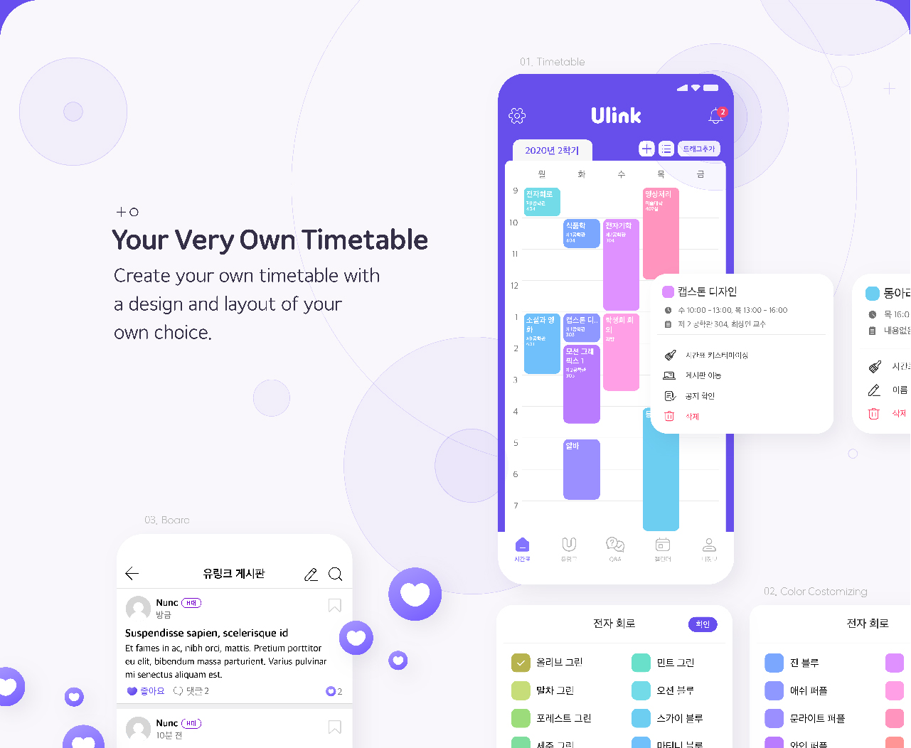
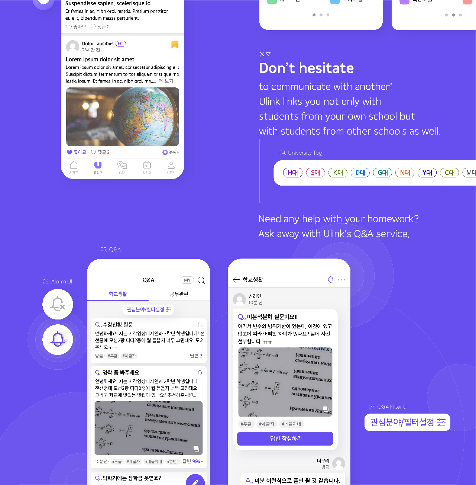
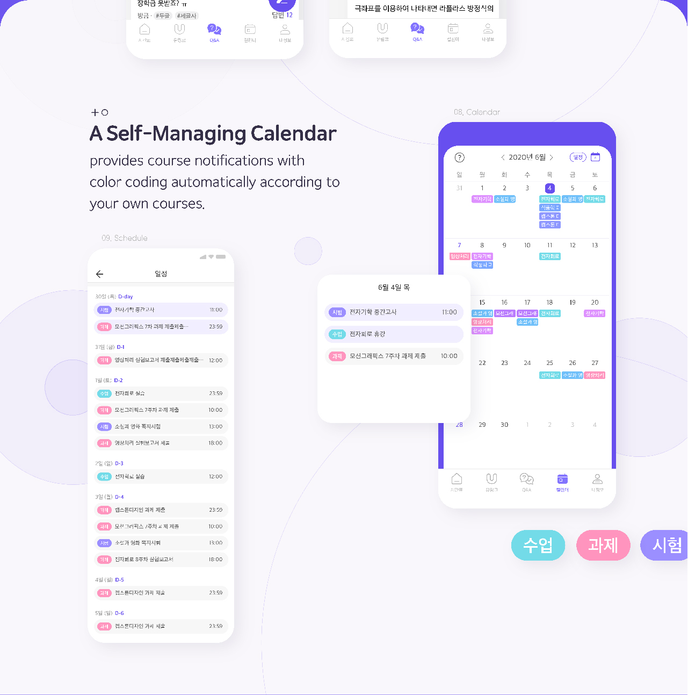
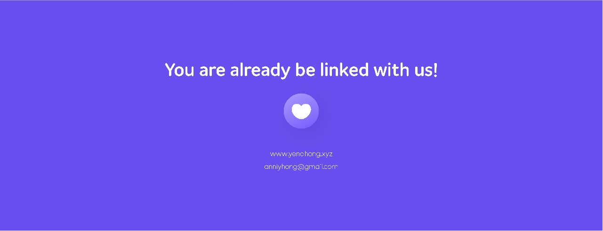
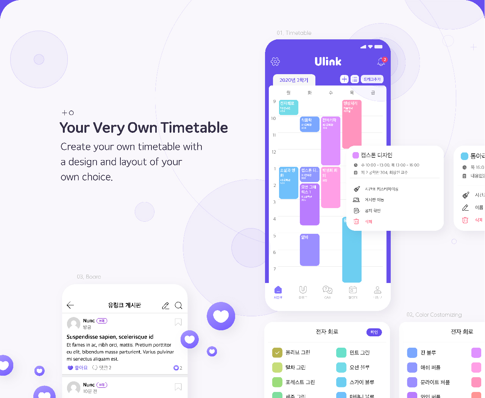
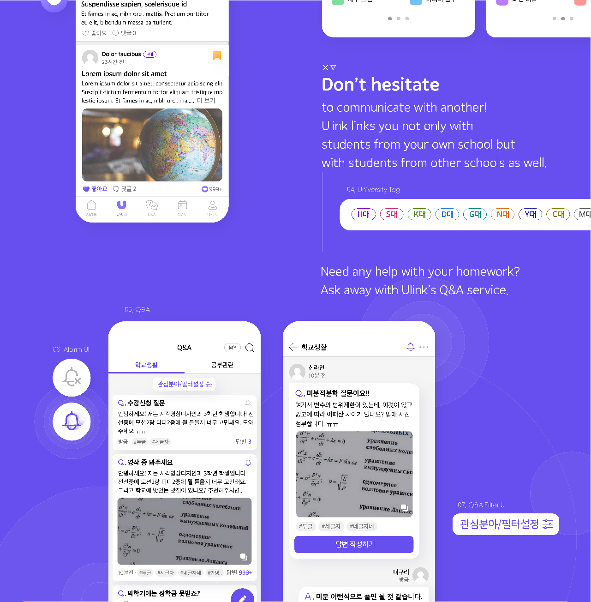
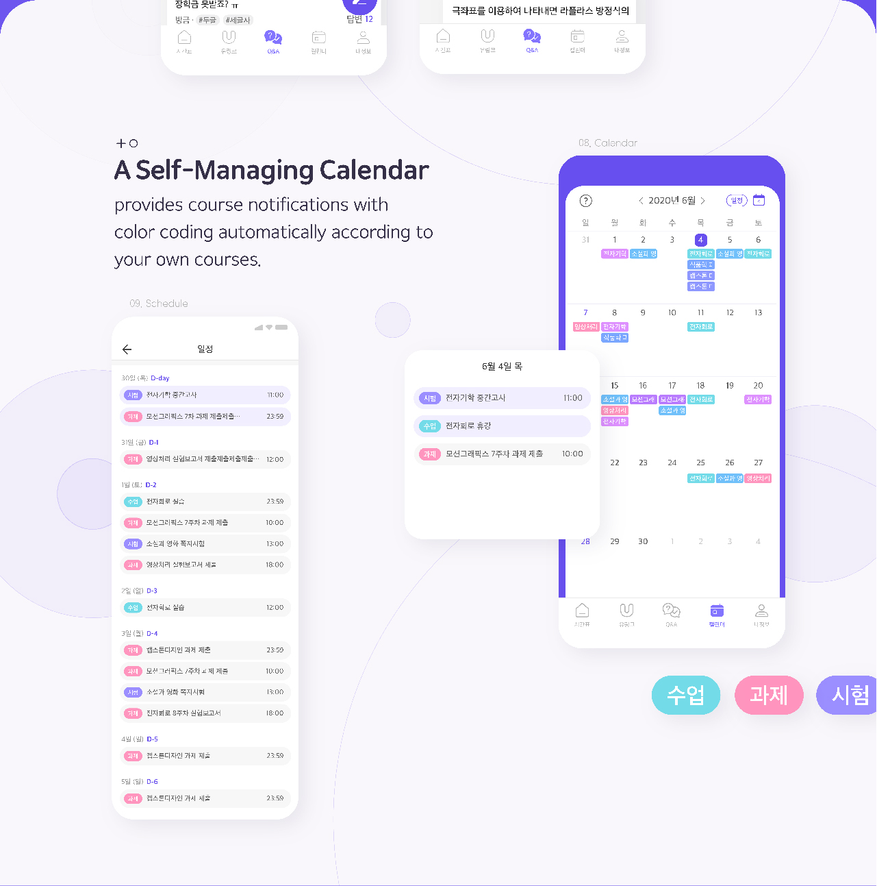
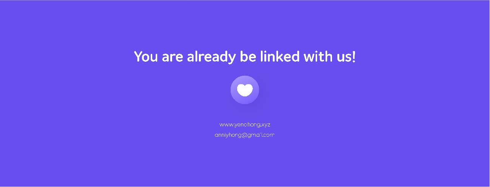

대학생들의 연결점, 유링크
홍예나
www.yenahong.xyz
https://www.instagram.com/designer_yenahong/
대학생들의 연결점, 유링크
유링크는 언텍트 시대에 부합하는 모바일 대학생 지식교류 플랫폼입니다.
유링크에서는 수업에 관한 정보를 공유하고, 우리 학교 학생 뿐만아니라 타 학교 학생들과 교류할 수 있습니다.
또한 Q&A방에서 대학원생, 또는 같은 학부생들에게 지식 도움을 받을 수 있습니다.
지금, 유링크에서 온라인 학교 생활의 즐거움과 지식 발전의 기쁨을 느껴보세요.
College life within one click, Ulink.
Ulink is a mobile college student knowledge exchange platform suitable for the Untect-world.
Ulink helps you to share information about classes and interact with students from other schools as well as your college.
You can also get knowledge help from graduate students or the same undergraduate students in the Q&A room.
Now, feel all the joy of school life and the pleasure of knowledge development at Ulink!